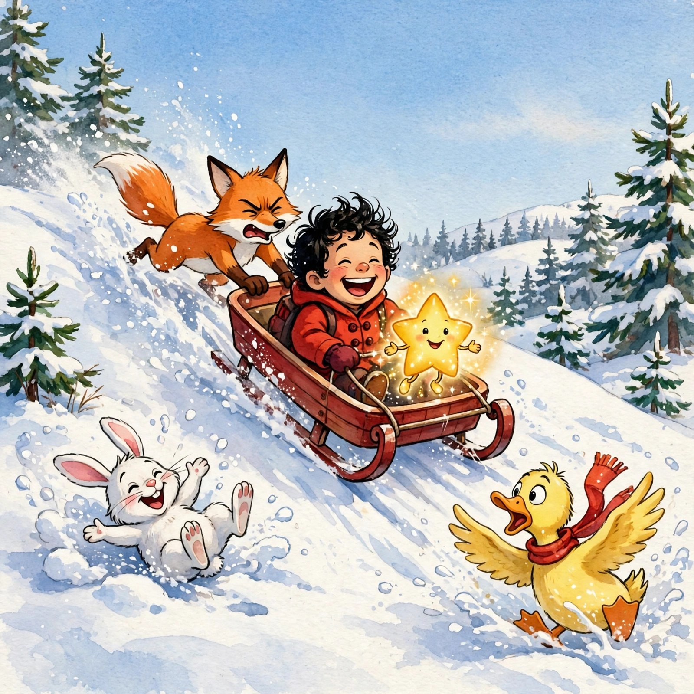
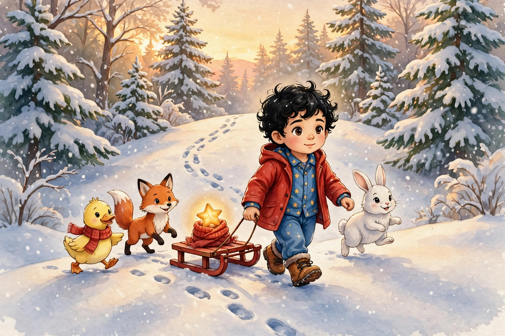
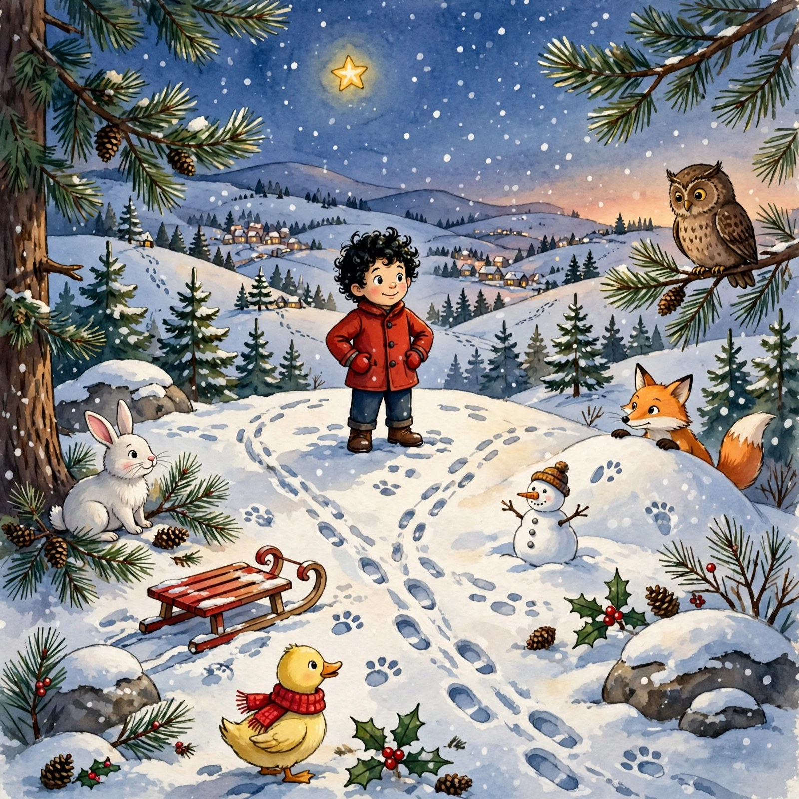
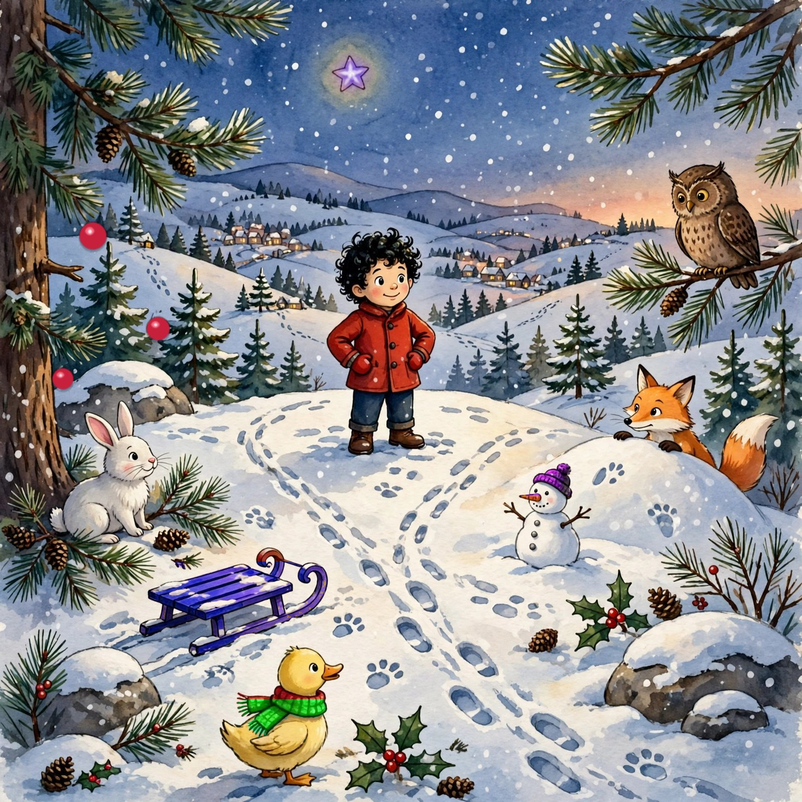
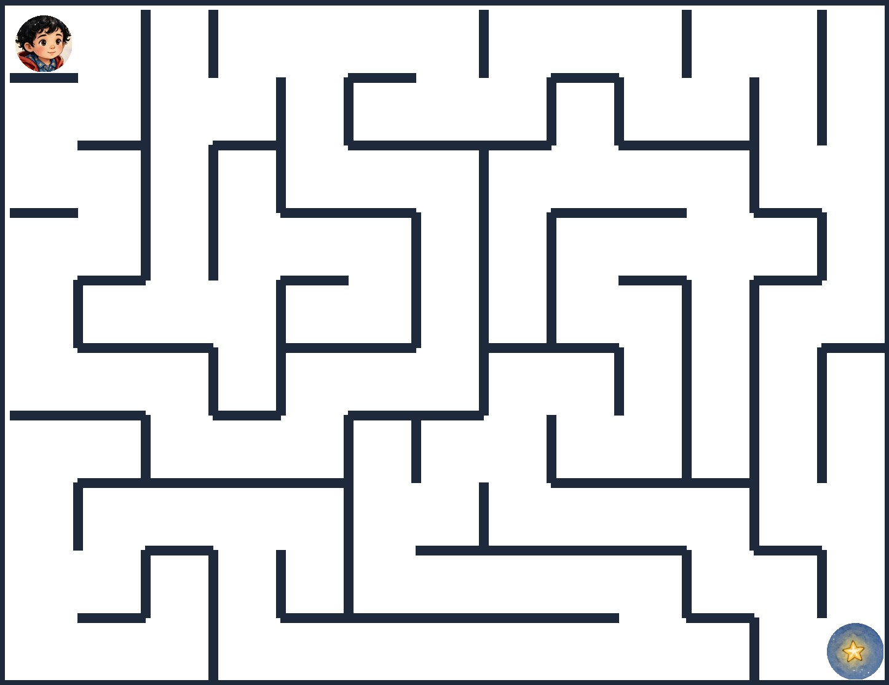
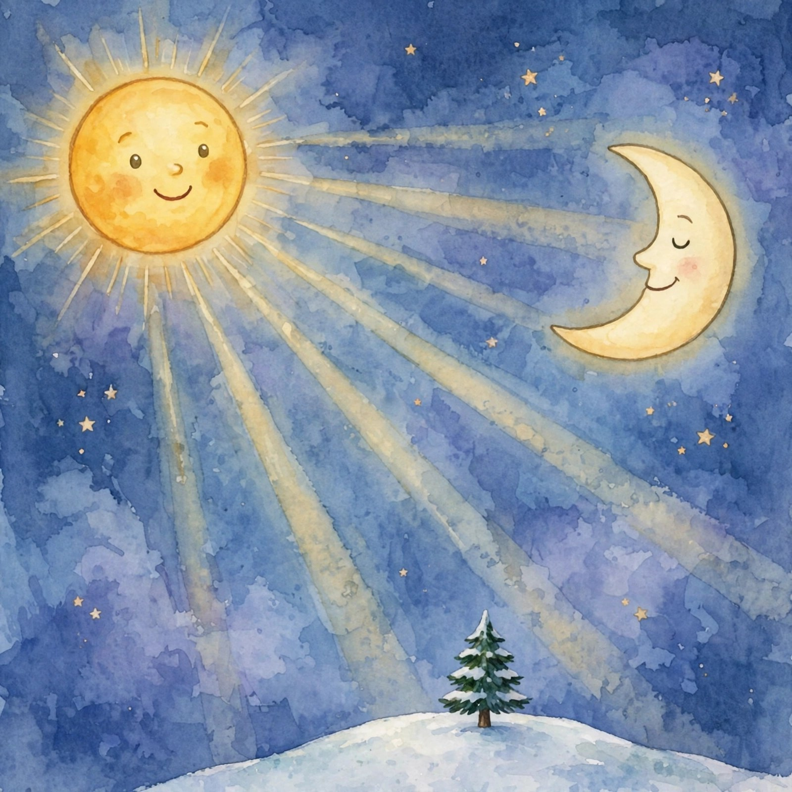
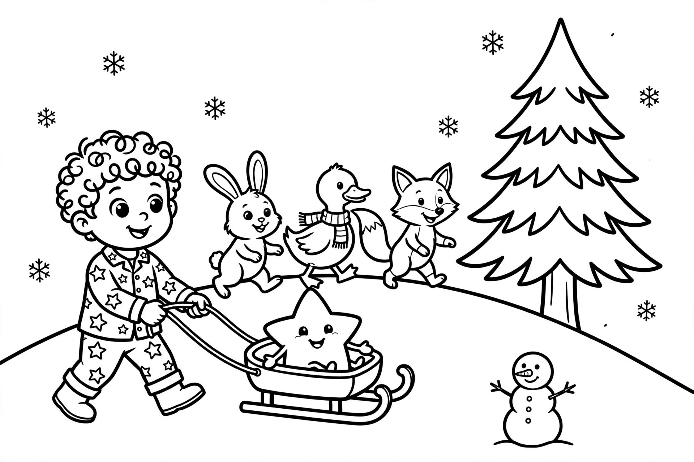
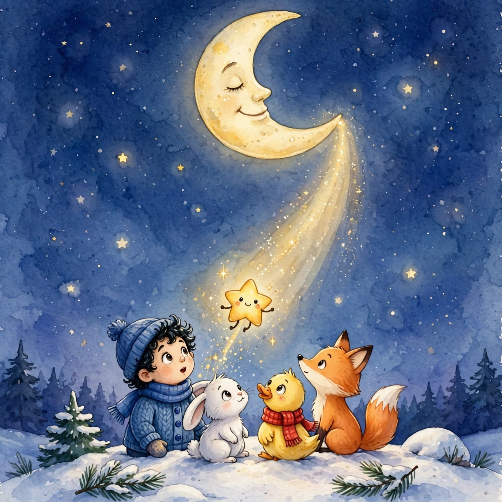
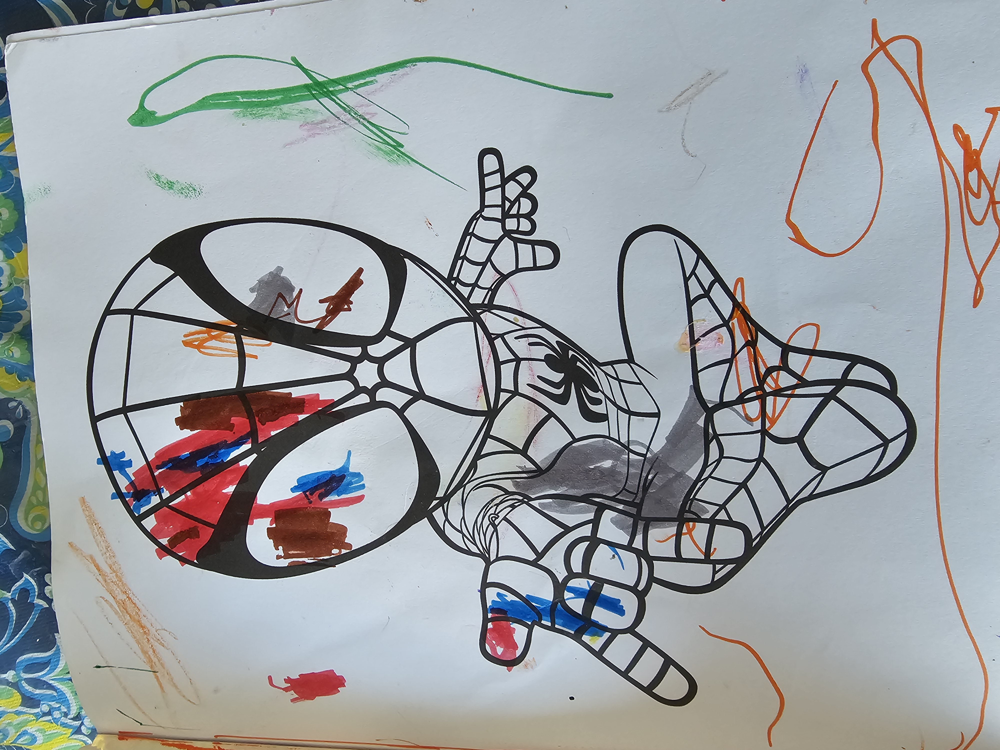

Le Petit Journal d'Adam
Nº 2 — Vendredi 27 novembre 2026 · Pour les 0 à 6 ans et leurs familles
📋 Dans ce numéro :
- ⭐ L'histoire à suivre : La petite étoile perdue — chapitre 2
- 📖 L'histoire en bande dessinée : lis les bulles et touche les personnages, ils te parlent !
- 🎲 Jeux interactifs : cherche et trouve, les 5 différences, le labyrinthe, devinettes, mots mêlés, compte avec Adam
- 🎨 Le grand coloriage de la montée de la colline à imprimer
- 🏆 Concours : dessine la Lune qui aide la petite étoile !
- 🎨 Les petits artistes : Jules, 4 ans, à l'honneur
- 🎨 Les petits artistes : le Spiderman de Jules, 4 ans !
- 📚 Dernière page : toute la bibliothèque d'Adam
Le journal gratuit des petits lecteurs d'Adam et ses amis.
⭐ L'histoire à suivre
La petite étoile perdue
Chapitre 2 — En route vers la grande colline

Le lendemain matin, Adam est prêt : bottes, manteau rouge et bonnet. La petite étoile l’attend dans le traîneau rouge, au chaud dans le foulard de Canard.
— En route ! crie Adam. On monte tout là-haut ! Lapin saute devant, Canard marche à côté du traîneau, et Renard guide le chemin : il connaît toute la colline.
Mais la neige est épaisse... le traîneau glisse et recule ! — Pousse, pousse ! crie Adam. Tout le monde pousse : un, deux, trois... et hop ! Il remonte.
Plus haut, un ruisseau gelé barre le chemin. La glace brille comme un miroir. — Attention, ça glisse ! dit Renard.
Main dans la patte, les amis traversent tout doucement, un petit pas après l’autre.
Puis le vent se lève et souffle très fort. La petite étoile tremble dans son foulard ! — Vite, sous le grand sapin ! dit Canard.
Sous le sapin, il fait doux et calme. Adam serre la petite étoile contre lui : — Ne t’inquiète pas, on est presque arrivés.
Et là, tout en haut, le soleil se couche. Le ciel devient rose et doré. Les amis sont arrivés !
La petite étoile regarde la Lune : — Il me faut sa lumière... Sans elle, je ne peux pas voler. Mais la Lune est encore loin, très loin...
👉 Que va-t-il se passer ensuite ? Imagine la suite... et dessine-la pour le concours !
✏️ Activité d'éveil — Suis le chemin
Avec ton doigt, suis les empreintes de pas dans la neige sur la grande image, d'Adam jusqu'en haut de la grande colline. Compte les sapins que tu croises en chemin !
📖 L'histoire en bande dessinée
Touche un personnage pour entendre sa voix : sa bulle de bande dessinée apparaît quand c'est son tour de parler, puis elle disparaît. Ou écoute toute la scène d'un coup avec le bouton sous chaque image.
🎲 Les jeux du vendredi
🔎 Cherche et trouve
Touche dans l'image tout ce que tu trouves : le lapin blanc 🐰, le canard jaune 🦆, le renard roux 🦊, le traîneau rouge 🛷, le bonhomme de neige ⛄, la chouette 🦉 et la petite étoile ⭐.

Trouvés : 0 sur 7
🔢 Compte avec Adam
Touche chaque dessin pour compter à voix haute avec Adam !
🔍 Trouve les 5 différences
Les deux images se ressemblent... mais 5 choses ont changé ! Touche chaque différence quand tu la trouves.

Différences trouvées : 0 / 5
🌀 Le labyrinthe
Aide Adam à retrouver la petite étoile ! Suis le chemin avec ton doigt, sans traverser les murs.

❓ Devinettes — Qui suis-je ?
🔤 Mots mêlés de la colline
Trouve les 7 mots cachés dans la grille (de haut en bas ou de gauche à droite). Sur l'écran, touche un mot pour le voir s'illuminer et l'entendre :
| P | F | S | C | C | A | V | T | W | B |
| R | J | H | I | K | O | T | I | H | A |
| E | S | C | T | K | N | E | I | G | E |
| N | A | E | T | O | I | L | E | D | Y |
| A | P | C | O | L | L | I | N | E | Y |
| R | I | P | Y | Y | R | Q | P | Z | W |
| D | N | J | F | N | H | I | D | D | K |
| B | W | W | T | J | B | S | C | F | V |
| B | X | R | H | L | U | N | E | S | C |
| I | M | J | B | P | L | A | P | I | N |
Réponses : COLLINE (ligne 5, de gauche à droite), ÉTOILE (ligne 4, de gauche à droite), NEIGE (ligne 3, de gauche à droite), LAPIN (ligne 10, de gauche à droite), RENARD (colonne 1, de haut en bas), LUNE (ligne 9, de gauche à droite), SAPIN (colonne 2, de haut en bas).
🌟 Le sais-tu ?
La Lune ne brille pas toute seule : c'est le Soleil qui l'éclaire, comme une grosse lampe dans le ciel !

🎨 Le grand coloriage
Adam et ses amis montent la grande colline avec la petite étoile — à toi de mettre les couleurs ! Imprime cette page et sors tes crayons.

🏆 Le concours du numéro
Dessine la Lune qui aide la petite étoile ! À ton avis, comment la Lune va-t-elle aider la petite étoile à voler de nouveau ? Dessine ton idée et envoie-la au Coin des artistes : les dessins choisis pourront paraître dans le journal et dans la galerie !

✍️ À toi d'écrire !
Tu as inventé une histoire ? Envoie-la-nous avec l'aide d'un parent : chaque histoire est lue avec soin par notre équipe, et les histoires choisies pourront paraître dans le journal, avec ton prénom et ton âge. À vos crayons, les petits auteurs !
🎨 Les petits artistes
Voici une œuvre d'un petit artiste, exposée dans le Coin des artistes :

Bravo, Jules ! Ton Spiderman est super ! 👏
Toi aussi, tu aimes dessiner ou bricoler ? Envoie ton œuvre au Coin des artistes : les œuvres choisies pourront paraître dans le journal !
🎨 Les petits artistes
Le journal ouvre ses pages aux artistes en herbe ! Voici une œuvre de notre galerie, le Coin des artistes :
Bravo, Jules ! 👏 Et merci à tous les petits artistes qui partagent leurs œuvres avec nous.
Toi aussi, tu as un dessin ou un bricolage ? Envoie-le au Coin des artistes avec l'aide d'un parent : les œuvres choisies pourront paraître dans le journal !
📚 La bibliothèque d'Adam
Tous les livres de notre bibliothèque, à retrouver sur le site. Les livres gratuits se lisent en ligne, avec la narration audio !
👶 0 à 3 ans — Bébé Adam (gratuits)
- 🎨 Les couleurs de Bébé Adam — gratuit
- 🎄 Le premier Noël de Bébé Adam — gratuit
- 🌙 Bonne nuit, Bébé Adam — gratuit
- 🐮 Les animaux et leurs sons — gratuit
🧒 4 à 6 ans — Adam et ses amis
- ⭐ Adam et ses amis : L'étoile de Noël — gratuit
- 🎃 La citrouille courageuse — gratuit
- 🚀 Les aventures d'Adam et ses amis — PDF sur Etsy
- 👻 Adam et ses amis : Halloween — 6 histoires — PDF sur Etsy
- 🌱 Le jardin de la coopération — PDF sur Etsy
- 👂 Adam apprend à écouter — PDF sur Etsy et livre broché sur Amazon.ca
🎨 Coloriage
- 🎅 Coloriage de Noël — Adam et ses amis — PDF sur Etsy
- 🦁 Coloriage des animaux — Adam et ses amis — PDF sur Etsy
Merci de lire Le Petit Journal d'Adam ! 💛